Jogos
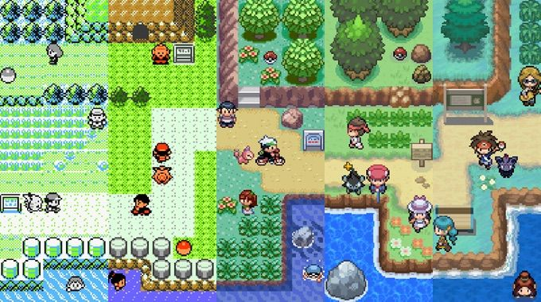
Pokémon é uma série de jogos eletrônicos desenvolvidos pela Game Freak e publicados pela Nintendo como parte da franquia de mídia Pokémon. Lançado pela primeira vez em 1996 no Japão para o console Game Boy, a principal série de jogos de RPGs, que continuou em cada geração em portáteis da Nintendo.
Os jogos são geralmente lançados em pares, sendo que cada um contém pequenas variações em relação ao outro.Enquanto a série principal consiste em RPGs, os spin-off abrangem outros gêneros, como RPG de ação, quebra-cabeça e jogos virtuais para animais de estimação.
Todas as propriedades de Pokémon são licenciadas e supervisionadas pela The Pokémon Company, são divididas aproximadamente pela geração. Essas gerações são divisões cronológicas aproximadamente lançados; quando é lançada uma sequela oficial na série principal de RPGs que apresenta novos Pokémon, novos personagens e possivelmente novos conceitos de jogabilidade, essa sequela é considerada o início de uma nova geração da franquia. Os jogos principais e seus derivados, o anime, o mangá e os jogos de cartas, são todos atualizados com as novas propriedades de Pokémon para cada vez que uma nova geração começa.
Primeira geração
Red & Green
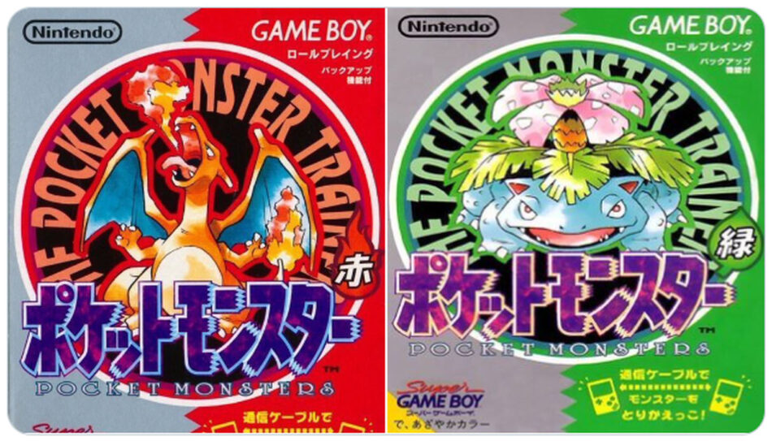"Pokémon Red & Green" foram os primeiros jogos da franquia Pokémon, lançados em 1996 no Japão para o Game Boy. Eles introduziram os jogadores ao mundo de Kanto, onde começavam sua jornada como treinadores Pokémon.
Os jogadores podiam escolher entre três Pokémon iniciais: Bulbasaur, Charmander e Squirtle, e partiam em uma aventura para capturar, treinar e batalhar com diferentes espécies de Pokémon enquanto desafiavam os líderes de ginásio para conquistar insígnias.
Estes jogos estabeleceram elementos fundamentais da franquia Pokémon, como a mecânica de batalha por turnos, a captura e a troca de Pokémon entre jogadores, além de terem introduzido 151 Pokémon originais.
Apesar de não terem sido lançados oficialmente fora do Japão, "Red & Green" foram o ponto de partida para o sucesso global da franquia, estabelecendo um legado duradouro na história dos videogames.
Red & Blue
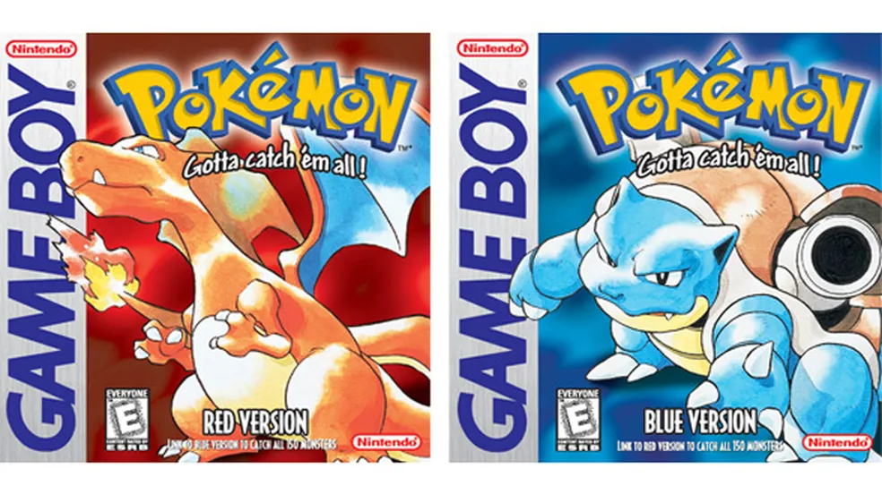"Pokémon Red & Blue" são os jogos inaugurais da série principal de Pokémon, lançados para o Game Boy em 1996 no Japão e, posteriormente, em outras regiões. Esses jogos estabeleceram os fundamentos da franquia Pokémon, apresentando a jornada do treinador em sua busca para se tornar o Campeão da Liga Pokémon.
Localizados na região de Kanto, os jogadores começam sua jornada escolhendo um entre três Pokémon iniciais: Bulbasaur, Charmander ou Squirtle. O objetivo é capturar e treinar Pokémon, desafiando os líderes de ginásio e a infame Equipe Rocket.
"Red & Blue" foram inovadores por permitir a troca e batalha entre jogadores usando um cabo Link, incentivando a interação social. Eles introduziram 151 Pokémon originais, tornando-se um fenômeno cultural e conquistando uma enorme base de fãs.
Esses jogos foram fundamentais para o sucesso da franquia, estabelecendo elementos essenciais da jogabilidade, como a captura de Pokémon, as batalhas por turnos e a exploração do mundo Pokémon, tornando-se clássicos atemporais.
Yellow
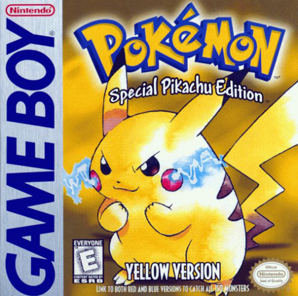""Pokémon Yellow" é um jogo da série principal de Pokémon lançado para o Game Boy em 1998 no Japão e posteriormente em outras regiões. Ele é uma versão especial baseada nos jogos originais "Pokémon Red & Blue", trazendo elementos inspirados no anime e diferenças únicas em relação aos seus predecessores.
O jogo segue a jornada clássica do treinador Pokémon em busca de se tornar um Campeão, enquanto segue eventos mais próximos da série de TV, incluindo um Pikachu que segue o jogador fora da Pokébola, assim como no anime.
"Yellow" introduziu melhorias em comparação aos jogos originais, como gráficos aprimorados, diálogo com personagens do anime e batalhas contra os líderes de ginásio com times mais similares aos do desenho.
Considerado um ponto de virada na série, "Pokémon Yellow" é lembrado por sua abordagem inovadora, oferecendo uma experiência mais próxima do anime e proporcionando aos jogadores uma aventura mais imersiva no mundo Pokémon.
Segunda geração
Gold & Silver
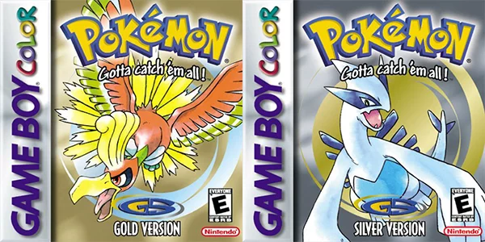""Pokémon Gold & Silver" são jogos da série principal de Pokémon lançados para o Game Boy Color em 1999 (Japão) e posteriormente em outras regiões. Esses jogos marcaram o início da segunda geração de Pokémon, introduzindo novos recursos e expandindo o universo Pokémon.
Localizados na região de Johto, os jogadores embarcam em uma jornada para se tornar o Campeão da Liga Pokémon, enfrentando desafios e colecionando distintivos de Ginásio. Além disso, após a conclusão da Liga, é possível explorar a região de Kanto, oferecendo uma experiência de jogo mais ampla.
"Gold & Silver" trouxeram 100 novos Pokémon, expandindo a Pokédex e permitindo aos jogadores encontrar e capturar criaturas inéditas. Introduziram também mecânicas notáveis, como o sistema de relógio interno e eventos baseados no tempo real dentro do jogo.
Esses jogos foram amplamente elogiados por sua inovação, adição de conteúdo significativo, e por estabelecerem padrões que influenciaram futuras edições da série Pokémon, tornando-se clássicos queridos pelos fãs até hoje.
Crystal
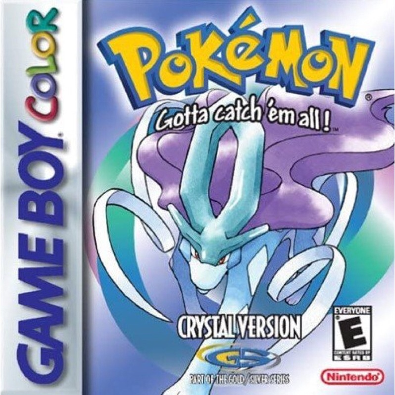""Pokémon Crystal" é um jogo da série principal de Pokémon lançado para o Game Boy Color em 2000 (Japão) e mais tarde em outras regiões. Ele é uma versão aprimorada de "Pokémon Gold & Silver", trazendo melhorias notáveis em relação aos jogos anteriores.
Este título introduziu características inovadoras, permitindo aos jogadores escolherem o gênero do personagem principal, apresentando animações mais avançadas durante as batalhas e implementando um sistema de horário no jogo.
A história se passa na região de Johto, com os jogadores buscando se tornar o Campeão da Liga Pokémon. Após a conclusão da Liga, é possível explorar a região de Kanto, ampliando a duração e o conteúdo do jogo.
"Pokémon Crystal" destaca o lendário Pokémon Suicune na trama e apresenta novidades, como a Battle Tower, onde treinadores podem enfrentar desafios contra oponentes poderosos.
Considerado um marco na série Pokémon, "Crystal" é lembrado por suas inovações, adição de conteúdo extenso e por ser uma versão aprimorada e icônica dos jogos da segunda geração.
Terceira geração
Ruby & Sapphire
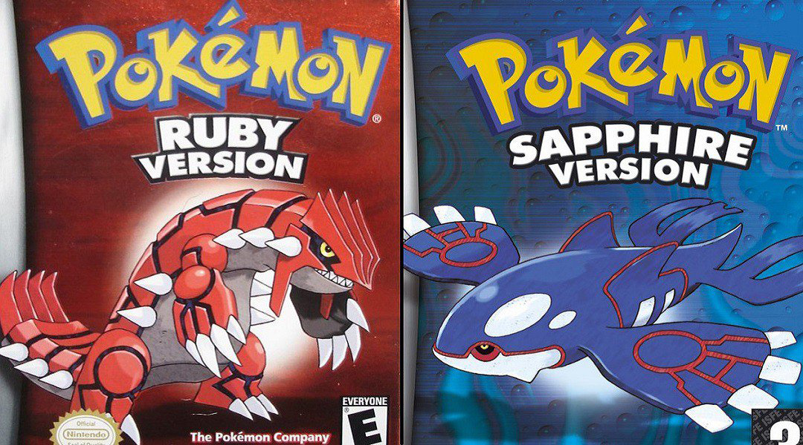"Pokémon Ruby and Sapphire" foi lançado para o Game Boy Advance em 2002 no Japão e em 2003 em outros países, marcando a terceira geração da série principal de Pokémon. Ambientado na região de Hoenn, o jogo introduziu inovações significativas à franquia.
Neste título, os jogadores exploram Hoenn, enfrentando novos desafios e encontrando 135 novos Pokémon, elevando o número total para 386. A inclusão das habilidades dos Pokémon e dos concursos de beleza foram adições marcantes, fornecendo novas mecânicas de jogo e diversificando a experiência.
O enredo segue a trama clássica de um treinador Pokémon em ascensão que busca se tornar um Campeão da Liga Pokémon, enfrentando a Equipe Magma e/ou Aqua, dependendo da versão do jogo, que têm o objetivo de expandir ou reduzir os oceanos e terras.
Além disso, "Ruby and Sapphire" introduziu mudanças climáticas dinâmicas que afetam a jogabilidade e o ambiente, adicionando uma camada estratégica às batalhas. A conectividade entre jogadores foi ampliada com a inclusão dos Cabos Link e a possibilidade de troca de Pokémon entre diferentes gerações de jogos.
Com seu vasto mundo, novos recursos e Pokémon, "Pokémon Ruby and Sapphire" é lembrado como um marco na série, atraindo tanto fãs antigos quanto novos para a diversificada região de Hoenn.
Emerald
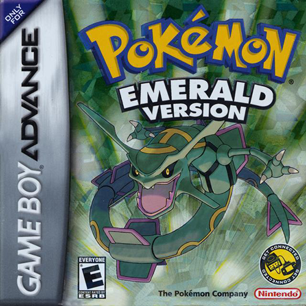"Pokémon Emerald" é um jogo lançado pela Nintendo para o Game Boy Advance em 2004/2005, na terceira geração da série principal de Pokémon. Este título é uma versão aprimorada de "Ruby and Sapphire", expandindo e aprofundando a experiência oferecida por esses jogos.
Situado na região de Hoenn, "Emerald" apresenta uma narrativa expandida em comparação com seus predecessores. Os jogadores exploram a região, enfrentam os líderes de Ginásio e a Equipe Aqua e/ou Magma, dependendo da versão do jogo. A trama se desenvolve em torno do lendário Rayquaza, que desempenha um papel central na história.
Uma das principais adições foi a inclusão da Battle Frontier, uma área pós-game que oferece sete instalações de batalha únicas, cada uma com seus próprios desafios e recompensas especiais. Isso proporcionou aos jogadores uma experiência de pós-game mais ampla e desafiadora.
Além disso, "Emerald" trouxe ajustes na narrativa, permitindo aos jogadores capturarem tanto Kyogre quanto Groudon, apresentando a habilidade de realizar Double Battles na história principal e adicionando detalhes visuais e mecânicas de jogabilidade aprimoradas em relação aos jogos anteriores.
Com suas melhorias e expansões, "Pokémon Emerald" é considerado um dos títulos mais bem-sucedidos e queridos pelos fãs da franquia Pokémon, oferecendo uma jornada mais completa e desafiadora pela região de Hoenn.
"
FireRed & LeafGreen
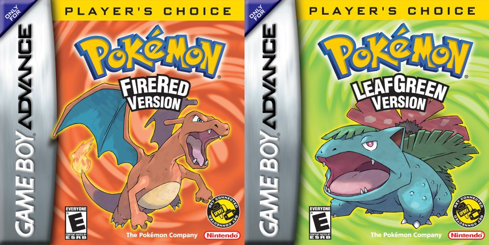"Pokémon FireRed and LeafGreen" são remakes aprimorados dos jogos originais "Pokémon Red and Green", lançados para o Game Boy Advance em 2004. Estes jogos marcaram a primeira geração da série Pokémon, trazendo de volta a região de Kanto em uma experiência renovada e atualizada.
Ambientados na região familiar de Kanto, os jogadores revisitam a jornada clássica do treinador Pokémon, explorando cidades, capturando Pokémon e desafiando os líderes dos Ginásios em busca das oito insígnias. Esses remakes apresentaram gráficos melhorados, mecânicas de jogo atualizadas e elementos de jogabilidade introduzidos nas versões originais da franquia.
Uma adição significativa foi a inclusão de novos recursos da segunda geração, como a habilidade de correr e o sistema de tempo real. Além disso, a possibilidade de troca e batalha com outros jogadores através de conexão sem fio foi uma novidade introduzida nestes jogos.
"Pokémon FireRed and LeafGreen" também ofereceram um pós-game expandido com a Ilha de Sevii, uma nova área com novos Pokémon e atividades para explorar após a conclusão da Liga Pokémon, acrescentando mais horas de jogo aos treinadores ávidos.
Estes remakes foram muito bem recebidos pela comunidade de fãs, proporcionando uma experiência nostálgica para os jogadores veteranos, além de serem uma excelente introdução à série para os novos treinadores Pokémon.
Quarta geração
Diamond & Pearl
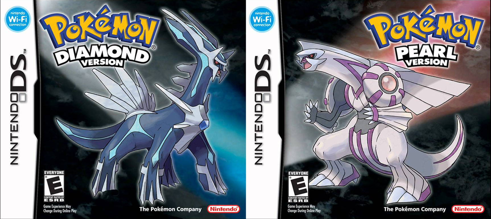"Pokémon Diamond and Pearl" foram lançados para o Nintendo DS em 2006/2007, marcando o início da quarta geração da série principal de Pokémon. Ambientados na região de Sinnoh, estes jogos trouxeram inovações significativas à franquia.
Na região de Sinnoh, os jogadores embarcam em uma jornada para se tornar um Campeão Pokémon, desafiando os Ginásios e enfrentando a Equipe Galáctica, cujos planos envolvem os lendários Dialga e Palkia. A introdução de 107 novos Pokémon expandiu a Pokédex, totalizando 493 espécies.
Uma das maiores adições foi a implementação do sistema de dia e noite, juntamente com ciclos climáticos que afetavam a jogabilidade e a disponibilidade de certos Pokémon. A funcionalidade online foi aprimorada, permitindo a troca e batalha de Pokémon através da conexão Wi-Fi.
"Pokémon Diamond and Pearl" introduziram batalhas em 3D e o sistema de movimentos físicos e especiais, adicionando uma nova camada de estratégia às batalhas. O Underground, uma área onde os jogadores podiam escavar e encontrar itens raros, bem como participar de atividades multiplayer, também foi uma novidade empolgante.
Esses jogos foram elogiados por suas melhorias gráficas, recursos online expandidos e novos elementos de jogabilidade que trouxeram uma experiência renovada para os treinadores de Pokémon, solidificando-se como um marco na história da série.
Platinum

"Pokémon Platinum" é um jogo da série principal lançado para o Nintendo DS em 2008/2009, sendo uma versão aprimorada de "Pokémon Diamond and Pearl". Ambientado na região de Sinnoh, este jogo trouxe diversas melhorias e adições à história e à jogabilidade de seus predecessores.
Na região de Sinnoh, os jogadores embarcam em uma jornada para se tornar o Campeão Pokémon, enfrentando os Ginásios e a Equipe Galáctica, cujos planos envolvem os lendários Dialga e Palkia. "Platinum" apresenta uma narrativa expandida e mais detalhada em comparação com os jogos anteriores, com o protagonismo estendido para a personagem Dawn/Lucas.
Uma das principais adições foi a inclusão da Distortion World, um reino surreal e distorcido onde os jogadores enfrentam Giratina, o lendário Pokémon associado a esse lugar. Além disso, novas áreas foram introduzidas, proporcionando uma exploração mais abrangente da região de Sinnoh.
"Pokémon Platinum" trouxe melhorias gráficas e mecânicas de jogo, incluindo animações mais fluídas e ajustes nas batalhas. Novos recursos, como o Battle Frontier, foram adicionados, oferecendo uma ampla variedade de desafios pós-game para os jogadores.
Este jogo foi bem recebido pela crítica e pelos fãs por suas melhorias em relação aos jogos anteriores, oferecendo uma experiência mais refinada e enriquecida na região de Sinnoh, tornando-se um dos títulos mais queridos e aclamados da franquia Pokémon.
HeartGold & SoulSilver
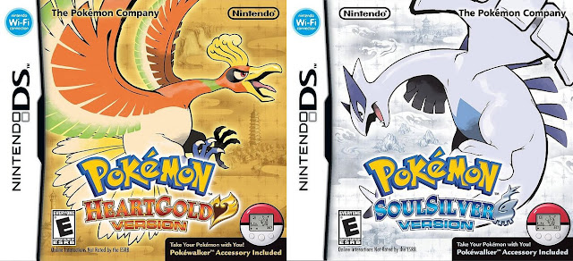"Pokémon HeartGold and SoulSilver" são remakes dos jogos originais "Pokémon Gold and Silver" da segunda geração, lançados para o Nintendo DS em 2009/2010. Estes títulos são ambientados na região de Johto e oferecem uma experiência renovada e aprimorada em relação aos originais.
Na região de Johto, os jogadores embarcam em uma jornada para se tornar o Campeão Pokémon, desafiando os líderes de Ginásio e a Equipe Rocket. Após a conclusão da Liga Pokémon, os jogadores têm a oportunidade de explorar a região de Kanto, proporcionando uma experiência de jogo expandida.
Uma das características marcantes de "Pokémon HeartGold and SoulSilver" foi a inclusão do acessório PokéWalker, um dispositivo portátil que permitia aos jogadores transferir Pokémon para o dispositivo e interagir com eles através de atividades no mundo real, oferecendo uma experiência única e inovadora.
Estes remakes trouxeram consigo gráficos aprimorados em comparação com os jogos originais, bem como mecânicas de jogo atualizadas. A reintrodução da funcionalidade de seguir o Pokémon inicial, apresentada pela primeira vez em "Pokémon Yellow", também foi uma adição apreciada pelos fãs.
"Pokémon HeartGold and SoulSilver" foram recebidos com grande entusiasmo pela crítica e pela comunidade de fãs, sendo considerados remakes excepcionais que proporcionaram uma experiência nostálgica e emocionante para os jogadores que revisitaram a região de Johto.
Quinta geração
Black & White
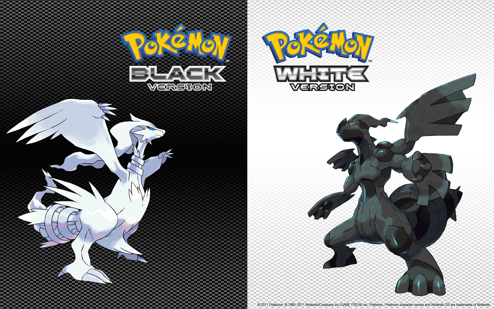"Pokémon Black & White" foram lançados para o Nintendo DS em 2010/2011, marcando o início da quinta geração da série principal de Pokémon. Estes jogos introduziram uma nova região, Unova, e apresentaram várias inovações à franquia.
Na região de Unova, os jogadores exploram uma nova história, enfrentam os Líderes de Ginásio e a Equipe Plasma, cujas motivações e ações diferem das vilanias anteriores. O jogo apresentou uma narrativa mais envolvente e complexa, além de um conjunto de Pokémon inicial completamente novo.
Uma das características inovadoras foi a introdução de estações sazonais no jogo, afetando a aparência da região e a disponibilidade de Pokémon selvagens. Além disso, "Black & White" introduziu o sistema de animações 3D durante as batalhas, proporcionando uma experiência visual aprimorada.
Outra adição significativa foi o Dream World, um recurso online que permitia aos jogadores interagir e capturar Pokémon especiais, bem como desbloquear habilidades ocultas para seus Pokémon.
"Pokémon Black & White" foram elogiados por sua narrativa, inovações e gráficos melhorados, sendo considerados por muitos como um recomeço refrescante para a série Pokémon, trazendo novas mecânicas e ideias que rejuvenesceram a experiência dos jogadores.
Black 2 & White 2
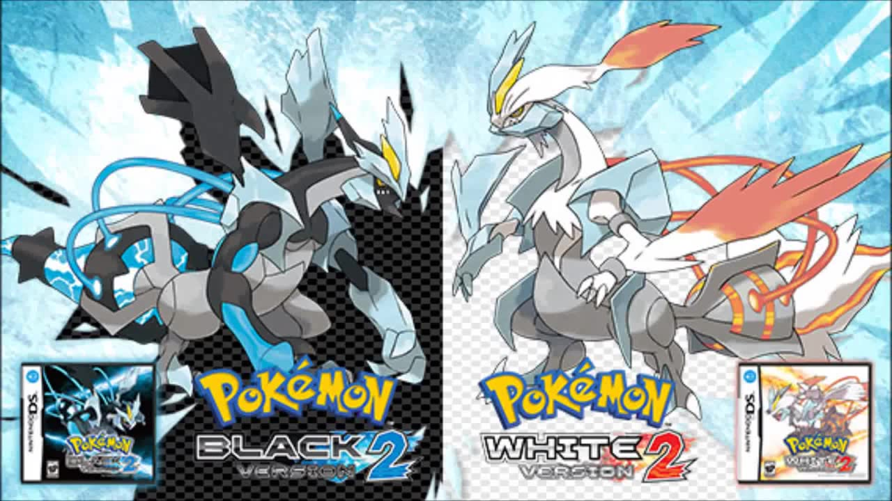"Pokémon Black 2 & White 2" foram lançados para o Nintendo DS em 2012/2013, sendo sequências diretas dos jogos "Pokémon Black & White". Ambientados na região de Unova dois anos após os eventos dos jogos anteriores, estes títulos trouxeram novidades à franquia Pokémon.
Na região de Unova, os jogadores encontram uma história expandida, com novas áreas e um elenco de personagens atualizado. Os jogadores enfrentam novos desafios, incluindo a nova Equipe Plasma e um novo protagonista ou protagonista, enquanto exploram uma Unova renovada.
Uma adição marcante foi o Pokémon World Tournament, um local onde os jogadores podiam enfrentar vários líderes de Ginásio e Campeões de outras regiões, proporcionando batalhas desafiadoras e diversificadas.
Além disso, "Black 2 & White 2" introduziram novos Pokémon na região de Unova, expandindo a Pokédex e oferecendo uma maior variedade de criaturas para os jogadores capturarem e treinarem.
Recebidos positivamente pela crítica e pelos fãs, "Pokémon Black 2 & White 2" foram elogiados por expandir a história, apresentar novos recursos e manter a essência dos jogos anteriores, tornando-se uma continuação bem-sucedida e apreciada na série Pokémon.
Sexta geração
X & Y
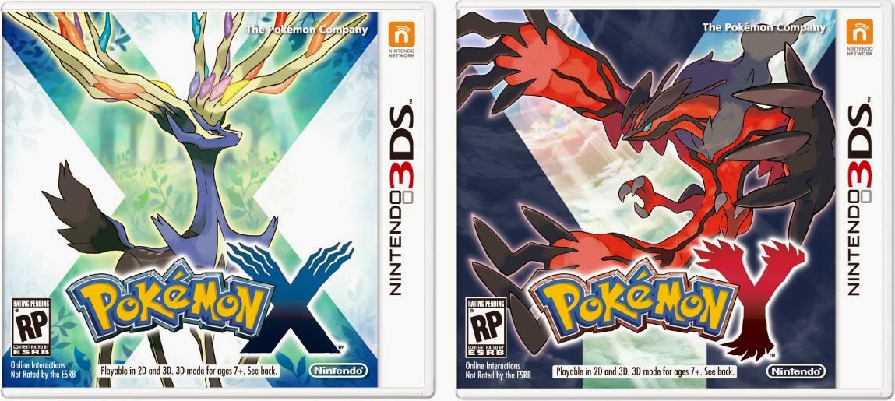""Pokémon X & Y" foram lançados para o Nintendo 3DS em 2013/2014, marcando o início da sexta geração da série principal de Pokémon. Ambientados na região de Kalos, estes jogos trouxeram várias inovações e mudanças significativas à franquia.
Na região de Kalos, os jogadores exploram um mundo 3D inovador, enfrentam os Líderes de Ginásio e a Equipe Flare, enquanto buscam se tornar o Campeão Pokémon. Uma das maiores adições foi a introdução do Mega Evolution, uma forma temporária e poderosa que certos Pokémon podem assumir durante as batalhas.
Os gráficos tridimensionais trouxeram uma nova dimensão à série, apresentando visuais mais vibrantes e detalhados. Além disso, o jogo ofereceu personalização de personagem, permitindo que os jogadores ajustassem a aparência do seu treinador.
Outra novidade foi a inclusão do Pokémon-Amie, um recurso que permitia aos jogadores interagir e fortalecer os laços com seus Pokémon através de atividades como carinho, alimentação e brincadeiras.
"Pokémon X & Y" foram elogiados pela transição para os gráficos 3D, as novas mecânicas de jogo introduzidas e as inovações significativas, tornando-se um marco na evolução da série Pokémon.
Omega Ruby & Alpha Sapphire
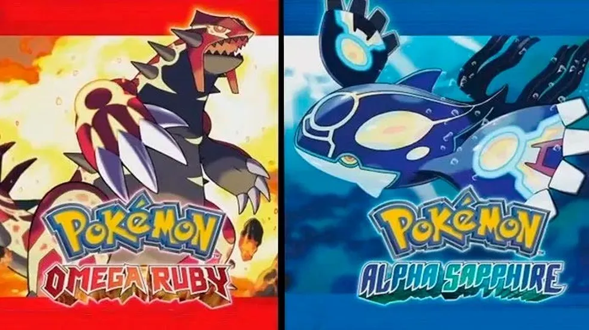"Pokémon Omega Ruby & Alpha Sapphire" foram lançados para o Nintendo 3DS em 2014, sendo remakes dos jogos originais "Pokémon Ruby & Sapphire" da terceira geração. Estes jogos revisitaram a região de Hoenn, trazendo novas mecânicas e melhorias à experiência original.
Na região de Hoenn, os jogadores embarcam em uma jornada para se tornar o Campeão Pokémon, enfrentando os Líderes de Ginásio e a Equipe Magma ou Aqua, dependendo da versão do jogo. Uma das principais adições foi o DexNav, que facilitou a busca por Pokémon com habilidades especiais.
Os jogos reintroduziram a funcionalidade de voar livremente em Pokémon, bem como Mega Evolution, que foi aprimorada com novos Mega Pokémon. Além disso, a inclusão do Contest Spectacular ofereceu aos jogadores uma maneira de competir em performances com seus Pokémon.
"Omega Ruby & Alpha Sapphire" trouxeram consigo gráficos atualizados, aproveitando as capacidades do Nintendo 3DS, e também expandiram a região de Hoenn, adicionando áreas inéditas e melhorando a exploração.
Recebidos positivamente pela crítica e pelos fãs, "Omega Ruby & Alpha Sapphire" foram elogiados por revitalizar a região de Hoenn com novos recursos, mantendo a essência dos jogos originais e oferecendo uma experiência modernizada para os jogadores.
Sétima geração
Sun & Moon
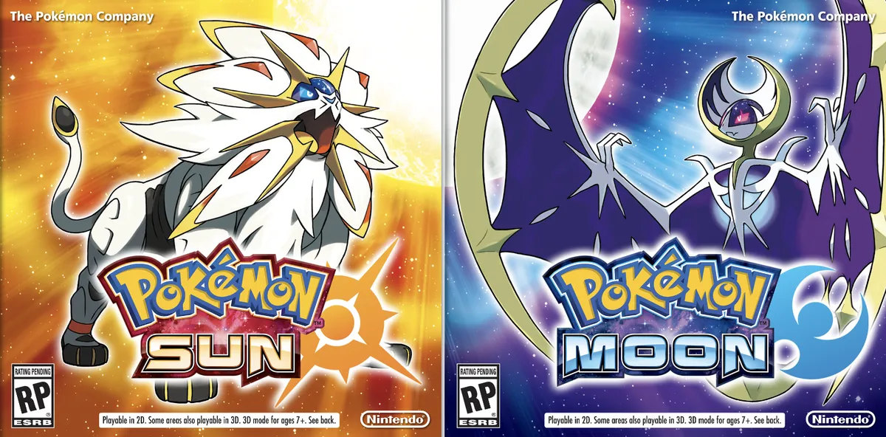"Pokémon Sun & Moon" foram lançados para o Nintendo 3DS em 2016, marcando o início da sétima geração da série principal de Pokémon. Ambientados na região de Alola, estes jogos trouxeram mudanças significativas na mecânica de jogo e na narrativa da série.
Na região de Alola, os jogadores exploram ilhas tropicais, enfrentam os Desafios de Ilha em vez dos Ginásios tradicionais e confrontam a Equipe Skull e a Fundação Aether. Uma das maiores inovações foi a remoção das batalhas de Ginásio em favor dos Desafios de Ilha e a introdução de Pokémon específicos da região.
Outra adição marcante foi o Pokémon Refresh, um recurso que permitia aos jogadores cuidar e mimar seus Pokémon, limpando condições status e aumentando os laços com eles. Além disso, os jogos apresentaram a nova mecânica Z-Moves, movimentos poderosos para Pokémon.
A narrativa de "Sun & Moon" foi elogiada por sua profundidade e personagens bem desenvolvidos, explorando temas mais maduros e complexos. Os gráficos também foram aprimorados para o Nintendo 3DS, oferecendo um mundo mais vibrante e detalhado.
"Pokémon Sun & Moon" foram bem recebidos pelos fãs e pela crítica, sendo elogiados por sua ousadia ao desafiar as convenções estabelecidas pela série, introduzindo novos conceitos e mecânicas que revitalizaram a experiência Pokémon.
Ultra Sun & Ultra Moon
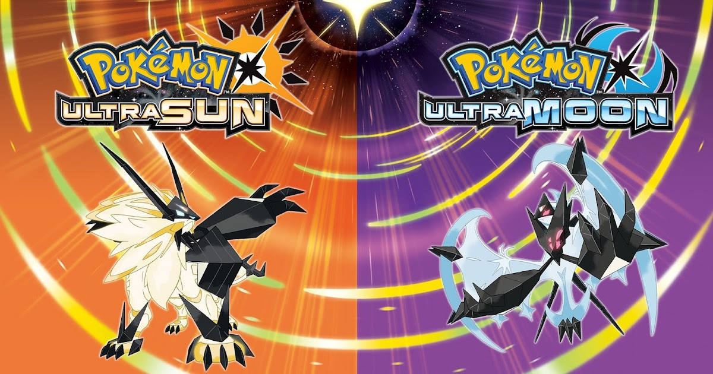"Pokémon Ultra Sun & Ultra Moon" foram lançados para o Nintendo 3DS em 2017, sendo sequências diretas dos jogos "Pokémon Sun & Moon". Estes títulos expandiram a história e os recursos introduzidos em sua predecessora, continuando na região de Alola.
Na região de Alola, os jogadores revisitam a história de Sun & Moon com algumas reviravoltas e uma narrativa expandida. Novos locais e personagens foram introduzidos, oferecendo uma experiência renovada em comparação com os jogos anteriores.
Uma das adições mais notáveis foi a inclusão dos Ultra Wormholes, permitindo aos jogadores explorar novas áreas e encontrar Pokémon lendários de diferentes regiões. Além disso, os jogos apresentaram novas formas para certos Pokémon, como Lycanroc e Necrozma.
Os jogos também introduziram o Photo Club, um recurso que permitia aos jogadores tirar fotos com seus Pokémon e personalizá-las com diversos adereços e poses.
"Ultra Sun & Ultra Moon" foram elogiados por expandir a história de Alola, trazendo novos elementos à região e oferecendo uma experiência mais robusta em comparação com seus predecessores, embora algumas críticas tenham sido direcionadas à semelhança com os jogos anteriores.
Let's Go, Pikachu! & Let's Go, Eevee!
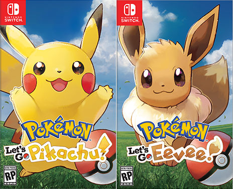"Pokémon: Let's Go, Pikachu! & Let's Go, Eevee!" foram lançados para o Nintendo Switch em 2018, sendo uma reimaginação dos jogos originais "Pokémon Yellow". Estes títulos combinaram elementos dos jogos clássicos com mecânicas inspiradas no jogo para dispositivos móveis Pokémon GO.
Baseados na região de Kanto, os jogadores revivem a jornada clássica da primeira geração de Pokémon, capturando criaturas, batalhando com treinadores e colecionando distintivos de Ginásio. A grande novidade foi a mecânica de captura, que se assemelhava ao Pokémon GO, utilizando movimentos físicos do jogador para capturar Pokémon.
Além disso, "Let's Go, Pikachu! & Let's Go, Eevee!" introduziram a mecânica de co-op, permitindo que dois jogadores jogassem juntos em uma única tela, fortalecendo a interação entre os jogadores.
Os jogos foram elogiados por sua acessibilidade para novos jogadores, gráficos atualizados e a maneira como conseguiram capturar a nostalgia dos jogos originais da série, apesar de algumas críticas em relação à simplicidade de certas mecânicas.
Oitava geração
Sword & Shield
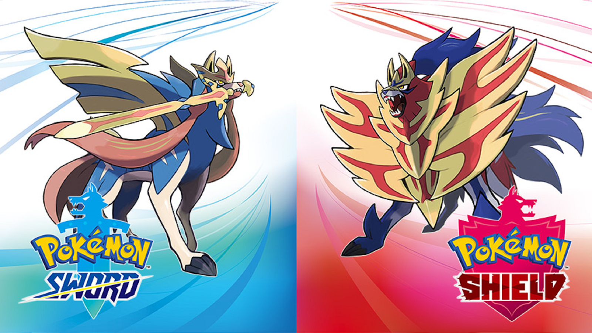"Pokémon Sword & Shield" foram lançados para o Nintendo Switch em 2019, marcando a oitava geração da série principal de Pokémon. Estes jogos introduziram a região de Galar, inspirada no Reino Unido, e trouxeram várias novidades à franquia.
Na região de Galar, os jogadores exploram um ambiente vasto, desafiando os Líderes de Ginásio e competindo no Torneio da Liga Pokémon para se tornar o Campeão. Uma das adições notáveis foi o Dynamax e o Gigantamax, que permitiam aos Pokémon crescerem e usarem movimentos especiais durante as batalhas.
Além disso, "Sword & Shield" apresentaram o Wild Area, uma área de mundo aberto onde os jogadores podiam encontrar uma grande variedade de Pokémon selvagens e participar de Max Raid Battles com outros jogadores.
Os jogos foram elogiados por seus visuais impressionantes e pela capacidade de adaptar a experiência Pokémon para o console de mesa, embora tenham recebido críticas em relação à redução da Pokédex, limitando o número de Pokémon disponíveis nos jogos.
Brilliant Diamond & Shining Pearl
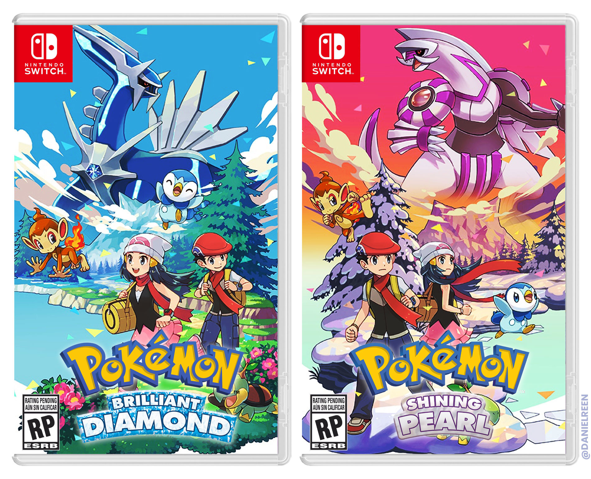"Pokémon Brilliant Diamond & Shining Pearl" foram lançados para o Nintendo Switch em 2021, sendo remakes dos jogos originais "Pokémon Diamond & Pearl" da quarta geração. Estes títulos revisitaram a região de Sinnoh, proporcionando uma experiência atualizada para os fãs da série.
Na região de Sinnoh, os jogadores embarcam em uma jornada para se tornar o Campeão Pokémon, desafiando os Líderes de Ginásio e enfrentando a Equipe Galáctica. Estes remakes mantiveram a essência dos jogos originais, trazendo gráficos atualizados e mecânicas de jogo modernizadas.
Uma das adições notáveis foi a presença do Grand Underground, um sistema que permite aos jogadores escavar e explorar cavernas subterrâneas em busca de Pokémon, itens e itens colecionáveis conhecidos como Espaços Secretos.
Os jogos foram elogiados por manterem a nostalgia e a atmosfera dos jogos originais, ao mesmo tempo em que trazem melhorias na qualidade de vida e gráficos atualizados para uma nova geração de jogadores, embora tenham recebido críticas em relação à fidelidade aos jogos originais.
Legends: Arceus

"Pokémon Legends: Arceus" foi lançado para o Nintendo Switch em 2022, oferecendo uma abordagem inovadora à série principal de Pokémon. Este título se passa na região de Sinnoh em uma era antiga, apresentando mecânicas de jogo únicas e exploratórias.
Em "Legends: Arceus", os jogadores são transportados para um passado distante de Sinnoh, onde assumem o papel de um treinador em uma missão de pesquisa e descoberta. A mecânica central do jogo é a exploração livre em um mundo aberto, onde os jogadores podem encontrar Pokémon selvagens, capturá-los e participar de batalhas em tempo real.
Uma adição notável é o sistema de combate em tempo real, onde os jogadores podem lançar Pokébolas diretamente nos Pokémon selvagens e participar de batalhas sem transição para uma cena de combate separada. Além disso, o jogo explora a história da origem de várias espécies de Pokémon.
"Legends: Arceus" foi elogiado por sua abordagem inovadora, oferecendo uma experiência de mundo aberto única na série Pokémon, apesar de algumas críticas direcionadas à otimização gráfica e a alguns elementos repetitivos no jogo.
Nona geração
Scarlet & Violet
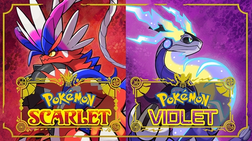Os jogos Pokémon Scarlet e Violet são os títulos de nona geração da série Pokémon, lançados para Nintendo Switch em 18 de novembro de 2023. Os jogos se passam na região de Paldea, uma região inspirada na Península Ibérica, na Europa.
No início do jogo, o jogador escolhe entre um dos três Pokémon iniciais: Sprigatito, um Pokémon Grama/Fada; Fuecoco, um Pokémon Fogo/Luta; ou Quaxly, um Pokémon Água/Lutador. Em seguida, o jogador é enviado para a Escola Pokémon, onde aprende sobre os Pokémon e começa sua jornada como Treinador Pokémon.
Ao longo de sua jornada, o jogador explora a região de Paldea, captura Pokémon, vence ginásios Pokémon e enfrenta a Elite dos Quatro. O jogador também pode participar de várias atividades, como explorar cavernas, pescar, cozinhar e participar de competições Pokémon.
A história dos jogos gira em torno de um fenômeno misterioso conhecido como "O Despertar". O Despertar está causando mudanças na região de Paldea, incluindo o surgimento de novos Pokémon. O jogador deve investigar o Despertar e descobrir o que está acontecendo.